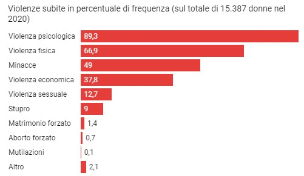

Il Femminicidio
Statistiche Femminicidi in Italia
Gli omicidi sono in calo, i femminicidi no. Emerge una costante: i responsabili
della violenza sulle donne sono quasi sempre partner, ex partner, parenti o
conoscenti.
La morte di Giulia Cecchettin per mano dell’ex fidanzato Filippo
Turetta rappresenta un caso drammaticamente esemplare di femminicidio.
Riflette quel modello ricorrente in cui un uomo è convinto di possedere una
donna, di avere controllo su di lei, e, volendo privarla della libertà, le toglie la vita.
Nel 2023, in Italia, sono state uccise volontariamente 120 donne,
di cui 87 di loro in ambito familiare o affettivo.
Guardando agli ultimi quattro anni, un dato è significativo: più di otto donne
uccise su dieci, conoscevano il loro assassino. Questa proporzione,
decenni fa, era molto più bassa per un motivo molto semplice: gli
omicidi volontari di donne commessi da sconosciuti sono diminuiti, quelli
commessi in ambito affettivo o familiare sono aumentate.
Le cause che portano al femminicidio possono essere molteplici: basso livello di istruzione; aver subito violenza da bambino; aver assistito a scene
di violenza familiare; abuso di alcol; disparità di genere.
Tutto questo porta a circa 600 omicidi negl'ultimi quattro anni e la Regione
Italiana con maggior numero di femminicidi è la Lombardia.
Gli autori del reato sono sempre partner, persone conosciute o sconosciuti.
TIPOLOGIE DI VIOLENZE SUBITE DALLE DONNE PRESE IN CARICO
DAI CENTRI ANTIVIOLENZA

QUANTE SONO LE VITTIME
Prendendo per buona la definizione dell’Istat, i dati ci dicono che negli ultimi
quattro anni in Italia sono avvenuti 475 omicidi volontari di donne, ma solo
per 397 di questi si può parlare di femminicidio. Di questi ultimi, 253 sono stati
commessi da un partner o un ex partner e gli altri 144 da un parente, un amico,
un collega o un conoscente.